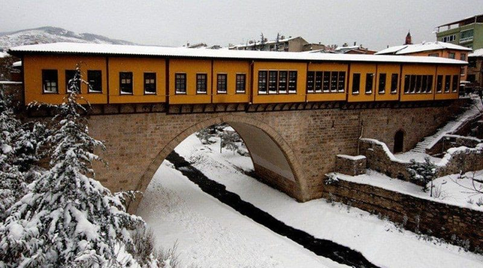

Boyacı Kulluğu Köprüsü'nün güneyinde bulunmaktadır. Osmanlıların tek arasta köprüsü olan bu taş köprünün, II. Murad zamanında, 1442 yılında, Irgandı Ali oğlu tüccar Hoca Muslihuddin tarafından, Hacı İvaz Paşa’nın vakfiyesinde şahit gösterdiği Abdullah oğlu Timurtaş’a yaptırıldığı sanılmaktadır. Celali ayaklanmalarının ardından, 1640 yılında Bursa’ya gelen Evliya Çelebi'nin Seyahatname’sinde, köprünün üzerinde 200 dükkanın bulunduğu belirtilmekteyse de gerçekte köprü üstünde her iki tarafta 16 adet olmak üzere 32 dükkanın yapılmış olduğu, bunlardan kuzeydoğu ucundakilerden birinin mescide ayrıldığı, köprüyü taşıyan tek kemerin iki yanında ahır ve depoların bulunduğu bilinmektedir.

Özgün duvarları kagir olarak yapılan Irgandı Köprüsü’nün dükkanlarının çatılarındaki ahşap konstrüksiyon, lök ile sıvanmış ve üstüne kurşun kaplanmıştır ancak daha sonra 17'nci yüzyılda kurşunların düşmesinden sonra çatıya kiremit döşenmiştir. Çeşitli kaynaklar, köprü çarşısının iki ucunun büyük demir kapılarla geceleri kapandığı belirtmektedir. 18'nci yüzyıldaki bir sel baskınında kısmen yıkılmış,1855 depreminde ise hasar görmüştür.1855'de yıkılan köprü üzerindeki çarşı, 19'uncu yüzyılın ikinci yarısında her biri konutu çağrıştıran irili ufaklı ahşap dükkanların yan yana dizildiği üstü açık bir çarşı haline gelmiştir. Kurtuluş Savaşı sırasında, 1922'de, işgal kuvvetleri Bursa'yı terk ederken dinamitlenerek yıkılan Irgandı köprüsü, 1949'da dükkansız bir şekilde betonarme olarak onarılmıştır. Köprünün restorasyonu konusundaki girişimler 1988 yılında başlamış ve köprünün rekontsrüksiyonu, ikinci restitüsyon aşamasına uygun olarak 2004 yılında tamamlanmıştır.